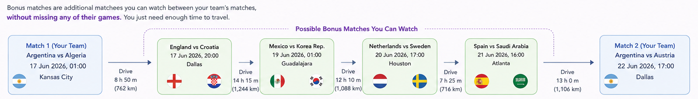

Hi Fans! Can you follow your team all the way to Final?
Imagine your favourite team is heading to the Final — would you want to miss a single match?
Let's visit every city and catch all their ⚽ games along the way
Assume your team wins the cup. Now plan the ultimate football road trip!!!
Start driving a rental car from Chicago Airport, follow your favourite team match by match, all the way to the World Cup Final.
Choose your team and its group finish (1st/2nd). The planner builds the driving route for every match.
As a true football fan, why stop at just your team's matches?
See how many bonus ⓘ

matches you can catch along the way
Built with Python, OSRM, OpenStreetMaps, and Leaflet